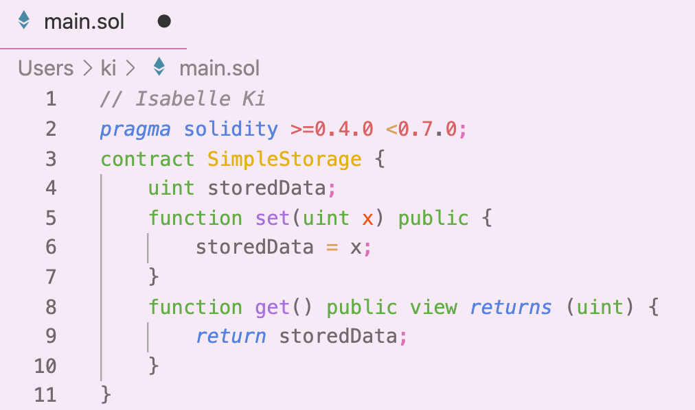

The radical change from being an international relations major to a computer science major has definitely sent me on the biggest ride of
my life thus far. Going from thinking about diplomacy and writing essays, to working on problem sets until late at night.
I don't mind it though, and I've definitely fallen in love with it as time has passed, despite how difficult it all is.
Nowadays, I have other interests meant to keep me afloat. I still keep in touch with my creative and active sides to keep a wide variety of interests.
For example, I've been a barista for over two years and am heavily invested in coffee culture, as it's been the best experience I've had. Additionally,
I enjoy working on web3 development and building decentralized apps using ReactJS and Solidity meant for Ethereum smart contracts.
The Transition to where I am now.
After a lot of thinking throughout the summer, I knew that international relations was not where I ultimately wanted to end up, and my interests led me to discovering the complex and fascinating world of computer science, and through several ups and downs, I couldn't be happier. Despite the stress that comes with the major, I continue to find constant enjoyment in the problem-solving aspect of it all.
"The measure of intelligence is the ability to change."
- Albert Einstein
My decision to switch majors definitely raised a lot of eyebrows from both people in the IR field and CS field. Even now, one of my constant worries is: Can I do this? Am I capable? However, despite all of these doubts - I ultimately recognise the big leap I made, and my perserverance through it.
I went ahead and tried building a simple chatbot using machine learning techniques meant to train the chatbot to recognise a vast array of responses while also perfecting my basic skills.
An in-the-works demo of my JS skills.
As I've began to discover my love for coding, I decided to build onto the a calculator assignment I did for CS103. You can now use it to compute the factorial of a number, or the square root. It also prevents you from preforming mathematically incorrect operations.
Becoming a barista.

Espresso groupheads.
Though most my time nowadays is spent coding and learning about more of the intricacies of programming, I still need to take time to myself, to have an opportunity for self-reflection in an external setting. A while ago, I became a barista for the experience of learning all about craft coffee and its exquisite taste. Fast forward two years or so, I now have a significant amount of experience that allows me to show and train others on the skill of making craft coffee and excellent service.
A way to destress
Working out
A hobby I've discovered over the past 6 months has been that of spin classes. A nice, 45/60 minute invigorating workout that gives every rider an opportunity to push themselves to their limits inside a dark, candlelit room where the only focus is yourself and the task at hand. It was in this room where I began to realise that I needed to stop being afraid of change, and go ahead and make the leap into a new field.
The New Internet
As the internet has begun the leap from web2 to web3, I am adamant and excited to be a part of the new innovation that has already begin to manifest itself. Through the creation of a decentralised web for all and based on the blockchain - there is much more potential for anyone of any walk of life to involve themselves in the new, decentralised universe.
The creation of a basic smart contract.
pragma solidity >=0.4.0 <0.7.0; are the words that have haunted me for a few months. As I've begun to dive deeper into aspects of the Ethereum blockchain, I've been working on the creation of a smart contract (a transaction protocol meant to automatically execute when a condition or set of conditions is met), which has been very difficult due to the lackluster documentation provided by Solidity. However, creating a basic smart contract that executed properly has been one of my largest victories thus far, and am excited for more to come.
What's next for me?
The experience that I've had in CS here at BU has been marred with its ups and downs and has been a very big learning experience for me. Through trial and error, bad exams and problem sets, there is just something in me that cannot give up just yet, if ever. Setbacks are setbacks and I know I need to continue on the path I'm on to succeed. And hey, part of the process is understanding that not everyone has the same skillset, and that's the beauty of this field. No two people will have 100% exact skillsets. Computer science is a beautiful field, and, through time, it is my goal to continue to explore the intricacies and beauty of it to its full potential.